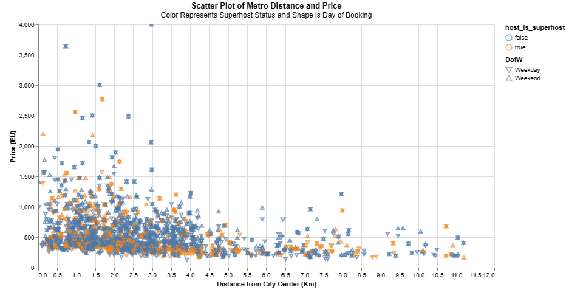

Airbnb Prices Exploration in Amsterdam
Overall Introduction
When choosing a topic for analysis, our team was driven by our shared passion for travel. As avid travelers and
college students, we were eager to delve deeper into the realm of travel economics. It was during this quest
that we stumbled upon a fascinating dataset on Kaggle, offering insights into Airbnb prices across European
cities, particularly comparing prices between weekdays and weekends.
Given our personal interests and the practical implications for trip planning, we were intrigued by the idea of
examining these price differentials. Understanding the factors influencing Airbnb pricing, such as overall
price, room capacity, and cleanliness rating, is crucial for travelers seeking economical yet comfortable
accommodations. We recognized the significance of this analysis not only for our own curiosity but also for
fellow travelers looking to optimize their travel experiences.
Our analysis is multifaceted, with the overarching goal of gaining comprehensive insights into Airbnb pricing
dynamics in Amsterdam. We aim to understand the intricate relationships between various factors and Airbnb prices,
thereby shedding light on the underlying price dynamics. Additionally, we endeavor to optimize booking
strategies by identifying the most cost-effective times to book Airbnb accommodations in Amsterdam.
Furthermore, we seek to discern housing preferences by analyzing the types of Airbnb accommodations that
best align with budget constraints and individual preferences. Lastly, we aim to explore the impact of
proximity to the city center on Airbnb prices, unraveling how location influences pricing
strategies in Amsterdam.
We aim to explore the correlation between Airbnb prices and various factors to understand the dynamics of pricing
in European cities. Our analysis delves into multiple aspects affecting Airbnb rates, including:
- Weekend/weekday bookings
- Room type (private room/shared room/entire apartment)
- Normalized attraction index (0-100)
- Normalized restaurant index (0-100)
- Number of bedrooms
- Number of guests
- Distance from the city center
For more information on our analysis and findings, feel free to explore the provided dataset and reference
articles:
Introduction to the data
Our analysis focuses on datasets sourced from Kaggle's open-source collection. Specifically, we are utilizing a
dataset containing Airbnb pricing information across major European cities, segmented by weekday and weekend
prices. Within this dataset, we are particularly interested in two tables: Amsterdam weekday offerings and
Amsterdam weekend offerings. These tables offer valuable insights into the variations in location, style, and
pricing of Airbnb accommodations based on the day of booking.
The combined dataset comprises a total of 2078 rows and 21 columns. The key features within this dataset include:
| Variable Name |
Details |
| id |
Unique identifier for each entry |
| realSum |
Total price of the Airbnb listing (numeric) |
| room_type |
Type of room being offered (e.g., private, shared, etc.) (categorical) |
| room_shared |
Whether the room is shared or not (boolean) |
| room_private |
Whether the room is private or not (boolean) |
| person_capacity |
Maximum number of people that can stay in the room (numeric) |
| host_is_superhost |
Indicates whether the host is a superhost or not (boolean) |
| multi |
Whether the listing is for multiple rooms or not (boolean) |
| biz |
Whether the listing is for business purposes or not (boolean) |
| cleanliness_rating |
Cleanliness rating of the listing (numeric) |
| guest_satisfaction_overall |
Overall guest satisfaction rating of the listing (numeric) |
| bedrooms |
Number of bedrooms in the listing (numeric) |
| dist |
Distance from the city center (numeric) |
| metro_dist |
Distance from the nearest metro station (numeric) |
| attr_index |
Attraction index of the listing location (numeric) |
| attr_index_norm |
Normalized attraction index (0-100) |
| rest_index |
Restaurant index of the listing location (numeric) |
| rest_index_norm |
Normalized restaurant index (0-100) |
| lng |
Longitude of the listing (numeric) |
| lat |
Latitude of the listing (numeric) |
| day_type |
Indicates whether it's a weekday or weekend (0 for weekend, 1 for weekday) |
These features provide a comprehensive overview of the Airbnb listings, allowing us to analyze factors such as
location attractiveness, amenities, and pricing strategies in Amsterdam.
The relationship between Airbnb Prices and other factors
The heatmap visualization not only uncovers correlations within the dataset but also prompts further
exploration into the relationship between Airbnb pricing and various factors.
Notice that if the correlation is small, it only means
that there is no potential linear relationship between two features.
Notably, we observe that Airbnb prices exhibit a strong positive correlation
with the maximum person capacity of the listing (0.53) and the number of bedrooms
available (0.5). Surprisingly, there appears to be a negligible correlation
between pricing and the day of booking (-0.07), suggesting that pricing dynamics
are minimally influenced by whether the booking falls on a weekday or weekend.
Additionally, the heatmap highlights a striking negative correlation between the
distance from the city center and the proximity to nearby attractions (-0.69)
and restaurants (-0.74). This finding suggests that accommodations closer to
the city center tend to be situated in areas with a higher concentration of
attractions and dining options, potentially influencing pricing dynamics.
A D3 Bar Chart Representation of each Room Type and Average Price
Color Represents Weekday vs. Weekend
The purpose behind the bar chart visual is to better understand how the type of space being booked can affect the average price the user can expect to see. Within this visual, the color indicates whether the booking is for the weekday or the weekend. This information can also be found in the x-axis titles. However, including it in the colorization of each bars allows for the viewer to group the bars into the three sections of rental types. These three rental types are the entire home, the private room, and the shared room.
The results of this visualization point towards two conclusions based on pricing and room space. The first is that the room space has a great effect on the average price of the rental. Renting an entire home, on average, costs considerable more than a private room which costs slightly more on average than a shared room. This makes sense considering the average floor plan and floor space being rented out increases as the price increases, on average. Therefore, as the space options increase in size (shared, private, house), the average price would also increase.
Secondly, while there are minor differences within the entire home and shared room prices, the only clear differences in average prices between weekday and weekend bookings comes from private room rentals. There could be many explanations behind this, including the higher turnover rate compared to home rentals and the higher costs on average compared to shared room rentals.
Correlations Between Distance From City Center and Booking Price

The third static visualization is about the correlation between the distance a location is from Amsterdam's city center and the price of the location. In order to best visualize this, each location represents a point on the above scatter plot, its shape representing the date of booking, and the color representing whether the host is a superhost. These additional pieces of information for each listing, alongside the location and price, can provide additional information on whether booking date or host type plays a role in grouping similar location data points towards certain prices or metro areas. For context, a superhost is Airbnb's way of defining whether a host has been cleared by the site as a reliable contractor.
Three main conclusions can be drawn by this visual:
Locations that are superhost locations vary less in price. The locations that are the highest in price close to and far from city center are composed of mostly non-superhost locations. This could possibly be the result of the verification process by Airbnb focusing on locations that are less likely to mislead people looking to book towards poor prices.
The shapes used to convey day-of-booking result in a new, distinct image if the location does not change its pricing between the two different date options. Therefore, the viewer can see that locations that do change are more likely to be non-superhosts. This could be for a similar reason as previously stated. Additionally, the most expensive locations that do very tend to have their day be the weekend.
Finally, there is a clear exponentially decreasing trend in the price of a rental as the user looks farther out from the city center. The most expensive rentals are located within 3 kilometers of the citer center, and locations farther than that do not rise above 1,500 Euros. This is understandable considering that the closer someone is to the city center, the higher the cost of living is, which gets refelcted in Airbnb prices.
Interactive Map of Amsterdam to Demonstrate Relationship between Geographical Location and Airbnb Price on Weekdays
The first interactive visualization aims to demonstrate if the geographical location of an Airbnb has an effect on its price on weekdays.
Each point on the map represents an Airbnb included in the dataset and the corresponding log of its listed price was plotted.
The interactive features on this plot allows the user to pan and zoom into areas of the map which are of interest to them.
The map also includes a tootltip feature which allows the user to hover their mouse over each Airbnb to access its price.
If the property is of interest to the user, they are provided the option to click on the Airbnb and get information regarding room privacy and capacity.
Furthermore, the user can change their view from an open street map to a lighter greyscale background.
Based on the distribution seen on the map, it can be inferred that Airbnb price
seems to increase with decreasing distance from the epicenter of Amsterdam.
This result was as expected as the city center of Amsterdam is a popular tourist destination
with close proximity to tourist attractions, shopping centers and restaurants. While
the price of these properties are higher, the person capacity is also higher and offers customers a private room and in some instances the whole
Airbnb to them. The Airbnbs near the epicenter that are priced mid-range tend to be
shared or have a lower person capacity. The Airbnbs toward the lower end of the price range are mostly located toward the outskirts of Amsterdam with a mixed
variety of person capacities and privacy status.
Interactive Map of Amsterdam to Demonstrate Relationship between Geographical Location and Airbnb Price on Weekends
This interactive visualization aims to demonstrate if the geographical location of an Airbnb has an effect on its price on weekends.
The map is structured similarily to the map demonstrating the prices of Amsterdam Airbnbs on weekdays.
Based on the distribution seen on the map, a similar trend between distance and price is illustrated.
The properties near the epicenter of the city are priced the highest while the price seems
to decrease with an increase in distance from the center of Amsterdam. A similar trend
with person capacities and room privacy was demonstrated in the weekend properties.
The higher prices Airbnbs offered higher person capacities and private rooms while the cheaper properties
near the city center offered shared rooms or have lower capacities. The Airbnbs toward the outskirts of the city
contained a mix of private and shared rooms with a range of capacities as well.
Contrary to our hypothesis, the prices on weekdays and weekends of the Airbnbs
are similar. While some properties have a slight difference in price, booking day
does not seem to affect the prices of a majority of the properties.
Interactive Map of Amsterdam Showing Correlation of Price and Bedroom Quantity
This visualization demonstrates the relationship between price, in Euros, and number of
bedrooms in a given AirBnb. The legend shows whether the listing was for
a weekday or weekend and is colored accordingly. Surprisingly, we see that
day of week doesn't have an overall impact on pricing, which varied from our initial
hypothesis that weekend rentals would be significantly higher than those of weekdays.
Properties with bedrooms on either side of the extreme (0 or 5 bedrooms) see lower
prices, while those with 3 bedrooms see the highest price points, with two outliers as
well. A majority of the prices fall below €3,000, with only a few listings
falling above that range. The highest concentration of bedrooms are with 1, 2, and 3
bedrooms, which makes sense given that most people are traveling with another person or two
or staying alone for an extended period of time.
To interact with this visualization, you can hover over a given data point
to get more information about the listing. You can see how far, in number
of miles, the listing is from the city center as well as the price and number of
bedrooms.
Summary
Overall, our main takeaway was that prices are higher closer to the city center,
which aligned with our expectations. Surprisingly, the correlation was quite weak (-0.07)
between price and day of week (weekday / weekend). Between restaurants and location
(in terms of distance to city center) there was a much higher correlation, with more
eatery locations being closer to the city’s epicenter. In terms of price, capacity
and number of bedrooms had correlations of 0.53 and 0.50 respectively, which makes
sense given that the more people an AirBnb can hold, the more expensive it will be.
Within room types, as seen with our bar graph, the largest price discrepancy for a
room type was between private rooms on weekdays and weekdays, showing that private
rooms have the most price fluctuation based on day of week. In terms of future considerations,
we may look into how superhost status affects guest satisfaction or price, and also examine
the relationship between price and guest satisfaction to see if more pricey AirBnbs have happier guests.